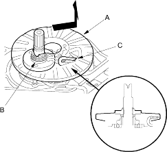
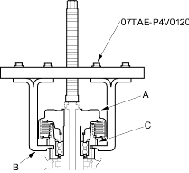
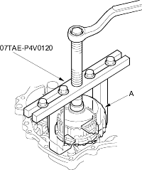

Start clutch remover, 07TAE-P4V0120
NOTE: Refer to the Exploded View as needed during the following procedure.
- Remove the ATF passage line holder.
- Remove the flywheel housing (20 bolts).
- Remove the ATF passage line (one bolt).
- Remove the ATF pump drive sprocket (three bolts) and remove the ATF pump drive chain.
- Move the pitot flange (A) toward its cutout (B) to clear the pitot pipe (C) under the pitot flange and remove the pitot flange.

- Remove the snap ring securing the ATF pump drive sprocket hub and remove the 22 x 28 mm thrust shim, ATF pump drive sprocket hub, thrust washers and thrust needle bearing.
- Remove the differential assembly.
- Remove the park pawl shaft, park pawl spring and park pawl.
- Remove the snap ring securing the start clutch and remove the cotter retainer and the cotters.
- Set the special tool on the start clutch (A) and attach the pawl (B) of the special tool to the park gear (C) securely. Do not place the pawl of the special tool on the start clutch guide. If the pawl contacts the start clutch guide, the clutch guide may be damaged. Be sure not to allow dust and other foreign particles to enter into the driven pulley shaft.

- Remove the start clutch (A) and the secondary drive gear assembly with the special tool.

- Remove the secondary gear shaft.